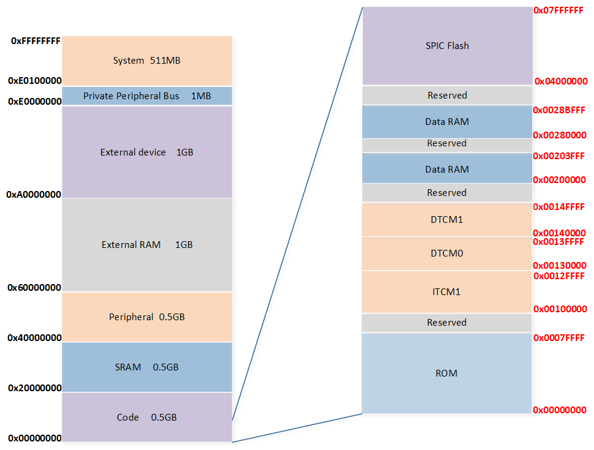
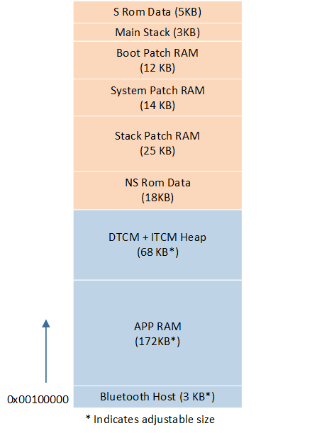

Memory
本章主要介绍 RTL87x2G 的内存系统。
Memory Map
RTL87x2G 的内存系统是基于 Arm Cortex-M55 的内存映射架构设计的，主要由 ROM 、 RAM 、Cache、Flash 和 eFuse 组成。其设计通过将 ARM 地址映射与 Realtek 定义的内存区域进行匹配，如图 RTL87x2G 的内存映射 所示。

RTL87x2G 的内存映射
Realtek 定义的内存区域 详细情况如下：
内存类型 |
分布 |
起始地址 |
结束地址 |
总大小（字节） |
|---|---|---|---|---|
ROM |
0x00000000 |
0x0007FFFF |
512K |
|
RAM |
ITCM1 |
0x00100000 |
0x0012FFFF |
192K |
DTCM0 |
0x00130000 |
0x0013FFFF |
64K |
|
DTCM1 |
0x00140000 |
0x0014FFFF |
64K |
|
Data SRAM |
0x00200000 |
0x00203FFF |
16K |
|
Buffer SRAM |
0x00280000 |
0x0028BFFF |
48K |
|
Cache |
I-Cache |
32K |
||
D-Cache |
16K |
|||
Flash |
SPI Flash |
0x04000000 |
0x07FFFFFF |
64M* |
eFuse |
eFuse |
1K |
备注
* 表示映射空间最大是 64M，实际以使用 Flash 大小为准。
ROM
ROM 的地址空间为 [0x0, 0x7FFFF)，总大小为 512KB，固化了 Bootloader、Flash Driver、Power Manager、Bluetooth Controller 及 Platform features 等程序模块。RTL87x2G ROM 为 APP 开放了一些模块，如 Flash Driver 等。RTL87x2G SDK 提供了这些 ROM 模块的头文件，用户可以访问内置 ROM 函数，以减少应用程序代码的大小和所需的 RAM 大小。
RAM
内存空间分布
RAM 分三块，分别是 TCM，Data SRAM 和 Buffer SRAM。其中 TCM 又可以分成三块，分别是地址空间为 0x00100000~0x0012FFFF 总大小 192KB 的 ITCM1、地址空间为 0x00130000~0x0013FFFF 总大小 64KB 的 DTCM0 和地址空间为 0x00140000~0x0014FFFF 总大小 64KB 的 DTCM1，三块空间地址连续。
TCM：一种专门设计的内存类型，着重于提供低延迟、高带宽和确定性访问的特性，包含 ITCM 和 DTCM：
RTL87x2G 的 RAM 空间 分为 5 部分，都可以用来存储数据和执行代码。
分布 |
起始地址 |
地址空间 |
大小 |
|---|---|---|---|
ITCM1 |
0x00100000 |
0x00100000~0x0012FFFF |
192KB |
DTCM0 |
0x00130000 |
0x00130000~0x0013FFFF |
64KB |
DTCM1 |
0x00140000 |
0x00140000~0x0014FFFF |
64KB |
Data SRAM |
0x00200000 |
0x00200000~0x00203FFF |
16KB |
Buffer SRAM |
0x00280000 |
0x00280000~0x0028BFFF |
48KB |
对于 TrustZone enable 和 TrustZone disable 其内存空间分布会有所不同，具体如下：
TrustZone Disable 内存空间分布

TrustZone disable RAM 布局
备注
TrustZone disable 时，不区分 secure 和 non-secure。
TrustZone disable RAM 用途 如下，每个部分都有固定的排布顺序和特定的用途。
内存类型内存 |
内存用途 |
内存可变 |
|---|---|---|
S ROM data |
存放 Secure ROM Code 中全局变量和静态变量 |
否 |
Main Stack |
启动和中断服务例程中使用该 stack |
否 |
Boot Patch RAM |
存放 Boot Patch 全局变量和静态变量以及在 RAM 上执行的 code |
否 |
System Patch RAM |
存放 System Patch 全局变量和静态变量以及在 RAM 上执行的 code |
否 |
Stack Patch RAM |
存放 Stack Patch 全局变量和静态变量以及在 RAM 上执行的 code |
否 |
NS ROM data |
存放 Non-Secure ROM Code 中全局变量和静态变量 |
否 |
DTCM + ITCM Heap |
供 Non-Secure ROM code、System Patch code、Bluetooth Host code 和 APP code 动态申请空间使用 |
是 |
APP RAM |
存放 APP 中全局变量和静态变量以及在 RAM 上执行的 code |
是 |
Bluetooth Host RAM |
存放 Bluetooth Host 全局变量和静态变量以及在 RAM 上执行的 code |
是 |
TrustZone Enable 内存空间分布

TrustZone enable RAM 布局
内存类型 |
内存用途 |
内存可变 |
|---|---|---|
S ROM data |
存放 Secure ROM Code 中全局变量和静态变量 |
否 |
Secure Main Stack |
Secure 启动和中断服务例程中使用该 stack |
否 |
Boot Patch RAM |
存放 Boot Patch 全局变量和静态变量以及在 RAM 上执行的 code |
否 |
System Patch RAM |
存放 System Patch 全局变量和静态变量以及在 RAM 上执行的 code |
否 |
Stack Patch RAM |
存放 Stack Patch 全局变量和静态变量以及在 RAM 上执行的 code |
否 |
NS ROM data |
存放 Non-Secure ROM Code 中全局变量和静态变量 |
否 |
NS Main Stack |
Non-secure 启动和中断服务例程中使用该 stack |
否 |
Secure Heap |
供 Secure ROM code 和 Secure APP code 动态申请空间使用 |
是 |
Secure APP RAM |
存放 Secure APP 中全局变量和静态变量以及在 RAM 上执行的 code |
是 |
NS DTCM + ITCM Heap |
供 Non-Secure ROM code、System Patch code，Bluetooth Host code 和 APP code 动态申请空间使用 |
是 |
NS APP RAM |
存放 NS APP 中全局变量和静态变量以及在 RAM 上执行的 code |
是 |
Bluetooth Host RAM |
存放 Bluetooth Host 全局变量和静态变量以及在 RAM 上执行的 code |
是 |
可调整的 RAM 区域 都是统一通过 mem_config.h 中不同的宏定义修改。NS_RAM_UPPERSTACK_SIZE 必须根据使用的 Bluetooth Host image 的版本对应设定。不同的 Bluetooth Host image 占用不同大小的 DTCM，请注意看 Bluetooth Host 发布文件及其说明。根据应用需要调整 NS_RAM_UPPERSTACK_SIZE 的大小。
内存类型 |
宏 |
|---|---|
Bluetooth Host RAM |
NS_RAM_UPPERSTACK_SIZE |
APP RAM |
NS_RAM_APP_SIZE |
DTCM + ITCM Heap |
NS_RAM_APP_RESERVED_SIZE - NS_RAM_APP_SIZE - NS_RAM_UPPERSTACK_SIZE |
APIs
通过调用 API：os_mem_alloc 可从 DTCM Heap、Data SRAM Heap 或者 Buffer SRAM Heap 上动态申请内存，由参数 ram_type 指定申请的类型，分别对应 RAM_TYPE_DATA_ON、RAM_TYPE_EXT_DATA_SRAM 和 RAM_TYPE_BUFFER_ON，具体代码如下：
typedef enum
{
RAM_TYPE_DATA_ON, //DTCM Heap
RAM_TYPE_DATA_OFF = RAM_TYPE_DATA_ON,
RAM_TYPE_BUFFER_ON,
RAM_TYPE_BUFFER_OFF = RAM_TYPE_BUFFER_ON,
RAM_TYPE_EXT_DATA_SRAM, //Ext DATA SRAM heap
RAM_TYPE_NUM
} RAM_TYPE;
/**
* @brief Allocate memory dynamically from Data RAM Heap or Buffer RAM heap
* @param ram_type : specify which heap to allocate memory from
* @param size: memory size in bytes to be allocated
* @retval pointer to the allocated memory
*/
#define os_mem_alloc(ram_type, size)
os_mem_alloc_intern(ram_type, size, __func__, __LINE__)
其他动态申请内存的 APIs 如下。（详细信息参考 os_mem.h）
API |
说明 |
|---|---|
申请的内存被初始化为 0 |
|
申请的内存按照指定的方式对齐 |
|
释放申请到的内存 |
|
释放按指定方式对齐申请的内存 |
|
统计指定 RAM 类型的未使用的内存大小 |
统计 RAM 使用情况
根据 APP 使用 RAM 的方式，分为静态区和动态区。
统计 APP RAM 使用的静态区大小
查找 Build 生成的 app.map 文件来找到 APP RAM 中分配的首地址，结束地址以及使用的大小。通过查找加载区 ER_IRAM_NS Map，可以确定 APP RAM 的静态使用情况。

ER_IRAM_NS Map
统计动态区剩余大小
通过 os_mem_peek 函数可以获取指定 RAM 类型的剩余 heap size。
调整 APP 可使用 RAM 大小
如果想进一步增加 APP 可使用 RAM 的总大小，可通过以下两种方式：
修改 MP Tool Config Setting 中 Stack 界面的一些 Stack 设定，例如蓝牙链路数目，AE 和 PSD 功能等。

MP Tool Config Setting 中 Stack 界面
关闭 log：修改 MP Tool Config Setting 中 Log 界面将 log 改为 disable。

MP Tool Config Setting 中 Log 界面
Cache
RTL87x2G 支持 32KB I-Cache 和 16KB D-Cache。
Cache 默认策略：
Flash 默认是 cacheable。
Data SRAM 和 Buffer SRAM 默认是 non-cacheable。
Flash
详见 Flash。
PSRAM
详见 PSRAM。
eFuse
eFuse 是一种一次编程的存储体，用来存储重要且固定的信息，例如：UUID，security key 以及其它只会配置一次的信息。eFuse 中每一 bit 不能从 0 改成 1，并且也没有擦除的操作，所以更新 eFuse 要十分小心。Realtek 提供 MP Tool 更新 eFuse。
See Also
相关 API Reference 请查看：